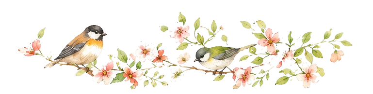

This is one of the most beautiful butterflies I saw in my backyard. With its delicate wings, it flew on every tree next to the bees.

I think he's right. Every time I went out, I came back with something I didn't go looking for.
Nature doesn't give what we expect. We receive little simple things. It's a present.
But a present isn't forever. So I keep some memories to remind me of the beauty of simpleness.
This is one of the most beautiful butterflies I saw in my backyard. With its delicate wings, it flew on every tree next to the bees.